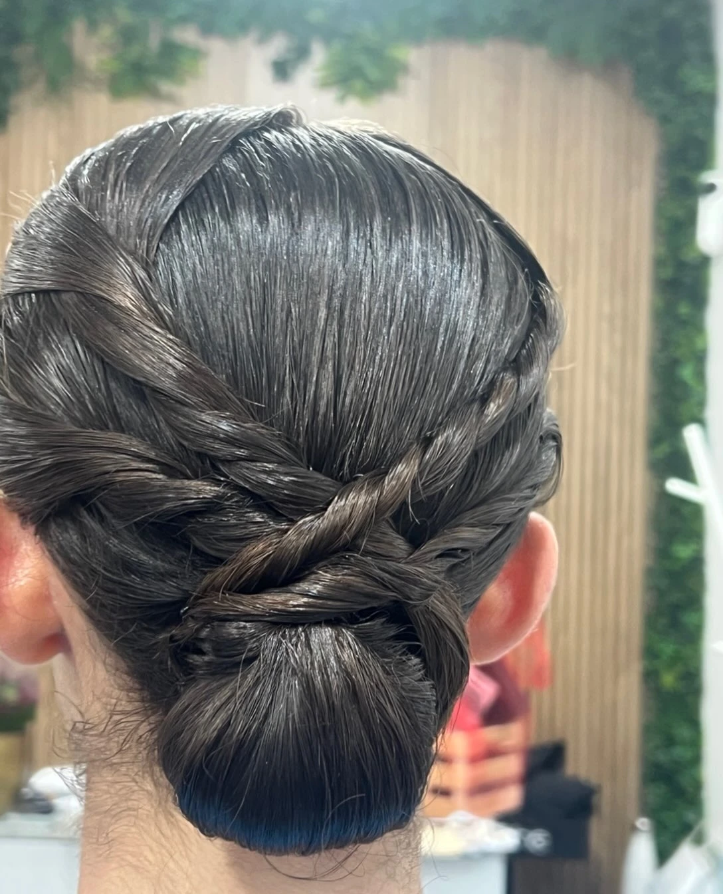
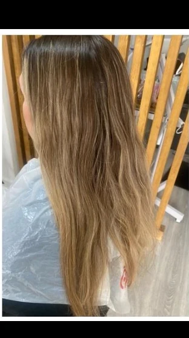

HECHO EN AURA · EL SAUZAL
Forma, color, movimiento.
Cortes que hablan de ti. Color sin amoniaco, rubios con matices y cuidados para disfrutar de tu melena.
Entrar en CabelloPeluquería + estética unisex / El Sauzal, Tenerife
Tu pelo. Tu piel. Tu forma de ser.
Un cuidado que empieza por escucharte
y termina haciéndote sentir muy tú.
Nuestra forma de mirar
Y eso es lo que queremos cuidar. Tu gesto, tu textura, tu manera de llevar el pelo. En AURA unimos técnica, productos profesionales y una atención que se toma su tiempo.
Elige tu próximo ritual
El cuidado cambia contigo.
Explora tu lado AURA.
Cortes que hablan de ti. Color sin amoniaco, rubios con matices y cuidados para disfrutar de tu melena.
Entrar en Cabello HECHO EN AURA · EL SAUZAL
HECHO EN AURA · EL SAUZALManos, pies, maquillaje y cuidados de estética. Pequeños rituales para reconectar contigo.
Entrar en Piel & bienestar
HECHO EN AURA · EL SAUZALRecogidos con intención y maquillaje personal. Preparamos contigo la belleza de tu celebración.
Entrar en Novias & invitadas
Color con intención
Un reflejo que ilumina tu rostro. Un tono con el que te reconoces. Elegimos el color después de conocer tu cabello, tu historia y lo que buscas.
Encuentra tu colorEl cambio, a tu ritmo
Desliza y explora un cambio de rubio publicado por el salón: de un tono cálido a un acabado más frío y pulido.
Dos fotografías del mismo trabajo, con ángulos e iluminación distintos. Sin simular resultados.


Novias + invitadas
Que el peinado acompañe tu sonrisa. Que el maquillaje siga hablando de ti. Preparamos los detalles para que tú te dediques a vivirlos.
Vamos a preparar tu díaLas manos detrás de AURA
Nos gusta que te sientas escuchada desde la primera conversación. Somos tres profesionales apasionadas por el cabello y un salón unisex al que puedes venir tal y como eres.
Entra en nuestro mundoLo que se siente, se cuenta
«Me encanta el trato y los productos orgánicos. Y no tardan en darte cita.»
«Muy profesionales. Puntualidad, buen trato, te aconsejan y te dejan exactamente lo que tú quieres.»
«Desde que llegué, el ambiente, el buen rollo y la atención hicieron que me sintiera súper cómoda.»
Consulta de Google: 20 de noviembre de 2026. La valoración puede cambiar.
La vida en el salón
Empieza por una sensación
Un poco de luz. Más suavidad.
O, simplemente, un rato para ti.
Explora el color personalizado y el cuidado de rubios. Te ayudamos a elegir el tono y el proceso que encajen con tu cabello.
Explorar rubios y maticesSin dudas, sin prisas
Si hay algo más que quieras saber,
estamos al otro lado.
Prepara tu mensaje de WhatsApp desde el botón de cita o llama al 642 63 69 70. El equipo confirmará contigo la disponibilidad y el servicio.
En la avenida Inmaculada Concepción, 42, en El Sauzal, Tenerife. En Contacto encontrarás el enlace para preparar tu ruta.
Antes de elegir el servicio escuchamos lo que buscas y valoramos tu cabello o tus necesidades. Así podemos recomendarte una propuesta personalizada.
Sí. Cuéntanos qué necesitas. Algunos trabajos requieren ver el cabello para concretar el importe y el tiempo de la cita.
Hay un momento que es solo tuyo
Cuéntanos qué necesitas. Nosotras ponemos
el tiempo, las manos y el cuidado.